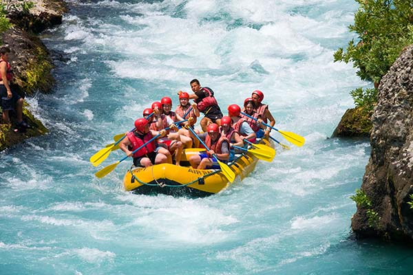

Looking for an unforgettable adventure? Get ready to experience the river like never before! Jump into the raft, feel the rush of the rapids, and discover breathtaking landscapes. Whether you're a first-time rafter or an experienced adventurer, our professional guides will be with you every step of the way.